← 返回阅读库 · 原论文目录
论文讲解阅读文档 · 机器人学 · v115
SAC Soft Actor-Critic Part 1[1801.01290]
视频时长 00:42:27；讲解文字 17,210 字符；提取讲解画面 151 张。按视频原顺序阅读，每段文字保留时间戳。
文字来自整段视频的自动语音转写，按自然停顿分段，并与 PPT / 论文页面 / 演示画面对齐。未将讲解压缩为摘要；术语、数字和口述公式请结合画面及原论文核对。 阅读稿已校正规范部分明确术语误识别；原始逐字稿和每处修改记录另行保留。
讲解画面为源视频截图（640×360），不是可编辑 PPT 文件。全片按每秒 2 帧扫描内容变化，逐步展开页保留；连续动画保留代表画面。清晰度受源视频限制。
下载完整资料包 · 含离线 HTML、PDF、Word、全部 PPT 画面和字幕。
原论文与材料
Soft Actor-Critic: Off-Policy Maximum Entropy Deep Reinforcement Learning with a Stochastic Actor · 下载完整 PDF（14 页）
按时间阅读
00:00:00–00:00:02 · 画面 001
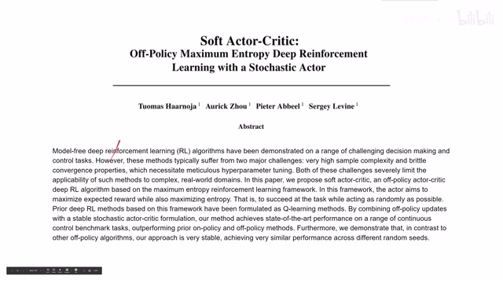
00:00:00–00:00:02 · 画面 001大家好,好久不见，今天我们来介绍 Soft Actor CriticOff-Policy Maximum Entropy Deep Reinforcement Learning with a Stochastic Actor。这篇文章是 18 年的文章，但是是非常经典的 reinforcement learning 的方法，可以说是近年来的极大成者。其实关于 Soft Actor Critic 有两篇论文，这篇论文是第一篇，这也是为什么我们会更新两个视频来介绍基础版的 Soft Actor Critic
00:00:02–00:00:33 · 画面 002
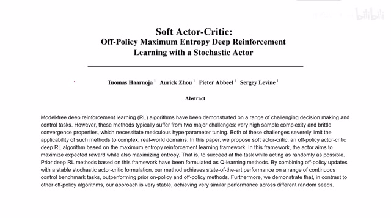
00:00:02–00:00:33 · 画面 002和它后面的改进。那么在今天的视频中呢，我们首先会从 policy gradient 谈起，把一些常见的数学基础介绍一下，然后呢我们会到经典的这个 actor critic，可以感受一下我们的 actor critic 这一系列的方法，它是怎样发展起来的，然后呢我们会对 soft policy iteration，也就是本文的这个 soft actor critic，它的原理进行一个逐个的推导
00:00:33–00:01:07 · 画面 003
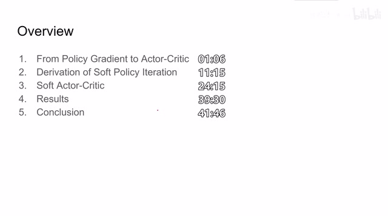
00:00:33–00:01:07 · 画面 003随后呢是本文的 subject created 的方法，以及作者汇报的结果和本文的结论。首先来到 policy gradient，那么这部分的内容呢，全部来自于这个 bookerly 的这个课程，感兴趣的朋友呢，可以在评论区找到这个相关的 slides 的链接，还有我们这个 lecture 的链接。那么我们来快速的介绍 policy gradient
00:01:07–00:02:24 · 画面 004
00:01:07–00:02:24 · 画面 004reinforcement learning 的本质呢，是我们在一个 trajectory 在一段这个轨迹当中，我们希望能学到一个 policy theta，这个 theta 呢能使这个 trajectory 中整个的所有的这个 reward 获得的它的期望是最大的，也就是说我们实际上是在优化一个与 theta 相关的这个 functionj，这个 function 呢是一个期望的形式，那么我们现在把这个期望打开这里的这个派 C 他呢就是我们的 policy，这个 R 呢就是这个 trajectory 的 reward，是整个一条轨迹他的 reward 的和，那么这个套呢这里呢是一个 trajectory，也就是说我们根据这个 C 他参数下描述的这个 policy 产生的一串 trajectory 套，在这个套的分布下，对于 reward 的期望就是我们想要最大化的这个 J 的这个方式
00:02:24–00:02:26 · 画面 005
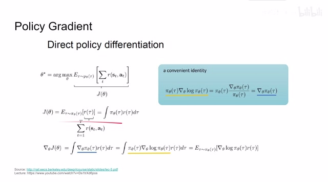
00:02:24–00:02:26 · 画面 005然后我们按照期望把这个式子写开来，写成一个积分的形式，也就是这边我们的概率值乘上我们这个 reward，那么为了最大化这个方式，我们需要对这个θ来求导，因为这个积分和θ没有关系，我们就可以直接把求导的符号拿进来，得到这样一个式子，这个式子它是有一个 trick 在里面的，假如这里我们从 1 中拆除一个πθ除上一个πθ，那么把这一部分
00:02:26–00:02:38 · 画面 006
00:02:26–00:02:38 · 画面 00600:02:38–00:02:39 · 画面 007
00:02:38–00:02:39 · 画面 00700:02:39–00:03:31 · 画面 008
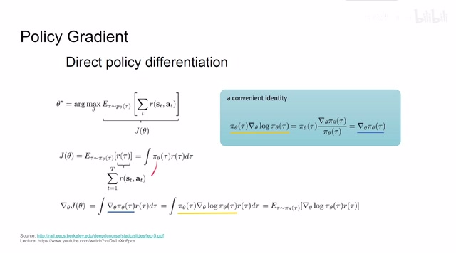
00:02:39–00:03:31 · 画面 008结合起来这样子呢，我们其实就得到一个 logπθ它的导数，然后呢再乘上这个πθ。也就是说，我们可以从这个蓝色的表达式变成这个黄色的表达式来，然后呢再回到这里。那么这样表达有什么好处呢？就是我们现在又有了一个这个πθ在外面了，然后呢我们就可以把这个πθ套再拿出来，那么整个式子呢又变成了一个期望的形式。那么这个式子呢是什么的期望呢，是 log 他的倒数乘上这个 reward 他的期望，那么下面呢我们来看怎么对这个 log policy 来继续做分解，因为这个套呢它是 state action 的 sequence，所以呢这里我们打开写成这样的形式，那么这个 sequence 呢是由 state transition 和 action 共同组成的，也就是说环境
00:03:31–00:04:34 · 画面 009
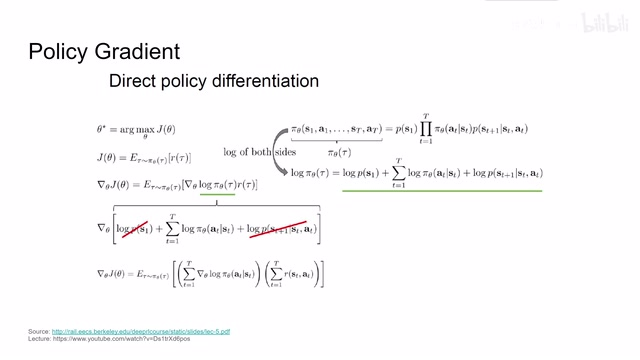
00:03:31–00:04:34 · 画面 009会给我们一个 state transition，也就是每次告诉我们更新的 s 是什么，那么我们的 policy 这个 pi 告诉我们每次的这个 action 是什么，那么我们从最开始初始的环境 s 1，对于每一个时刻来说，我们的 policy pi 根据这个当前的 state 来产生一个 action，那么这是一个概率，然后呢在得到 action 之后，我们的这个环境通过当前的 state 和 action来产生下一个 state，这又是另一个概率。那么这一串轨迹发生的概率呢？因为它们都是独立事件，所以呢就是可以直接的相乘起来。这里写上了一个连乘的形式。那么这个呢就是我们这个 jθ当中这个πθ它的这个展开的表达式。那么这里我们对它两边同时去 log，那可以看到这个连乘的形式瞬间就变成加法的形式了。
00:04:34–00:04:35 · 画面 010
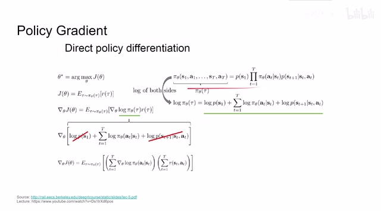
00:04:34–00:04:35 · 画面 01000:04:35–00:05:31 · 画面 011
00:04:35–00:05:31 · 画面 011注意这里的球和符号管的是这两项。然后呢我们再按照表达式里的要求呢，对 log pi theta 对 theta 进行求导。可以看到呢，这一项它没有 theta，它是一个常数，我们就可以去掉。而这一项里面呢，它也是跟 theta 无关，因为这是环境的 dynamics 跟我们的 policy 是没有关系的，所以呢它也可以去掉。那么剩下的呢只有是对这个 log pi theta 这个 policy。
对他对 SETA 进行求导，这一项留了下来。那么所以呢，上面这个式子最终呢就可以写成这样一个和乘上这边的 reward 这样的一个形式。当然在实际的训练过程中呢，我们并不能准确的知道他的期望是什么。所以呢我们采取的策略呢就是把我们当前所知道的所有的轨迹，所有每一个时刻的 reward 都加起来，然后求个平均。
00:05:31–00:07:31 · 画面 012
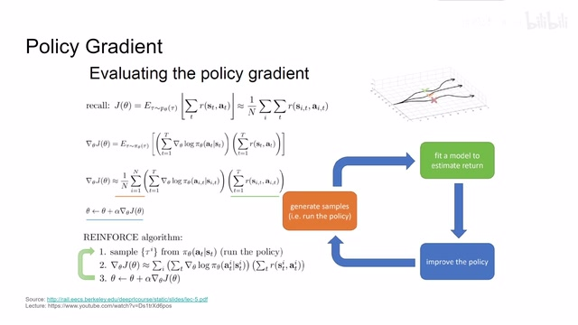
00:05:31–00:07:31 · 画面 012来用这个平均值去估计这个期望。我们也可以把收集到的所有的样本对吧，按照这个表达式填写进去就平均值。这样子得到这个平均值呢，就是对这个 gradient 对这个导数的估计。然后呢我们再使用 alpha 的步长去更新这个θ。这样子呢我们得到的θ呢就能够像是 jθ变大的方向靠拢。那么这个呢就是 reinforce 算法的基本思想。
也是所有 policy gradient 方法的基本思想。当然这种方法存在的问题呢还是很大的。首先就是在这个估计的过程中呢，我们的使用平均值这个估计它第一不一定准确，第二呢未必呢是稳定的。这个梯度每次我更新选用多大的步长来合适呢？因为我选对了一个好的α，这个 reward 它是没有任何 normalization 的。
也就是说它可以轻易的回到我们之前 alpha 的选择。甚至假如说如果这个水灾水它的整个一串下来它的 reward 就是 0，那么这个怎么更新呢？其次呢就是每一次我们都需要先使用这个当前的 policy 来跑一遍之后得到这个 reward，再对这个 network 进行更新。当我们更新完这个 network 之后呢，我们使用的 policy 呢已经跟原来的不一样了。
我们需要再重新按照新的 policy 跑一遍来再对我们的 policy 进行更新。可以看到这种方法呢它的数据效率呢是很低的。所以呢我们在这里提出了 actor predict。也就是说这个 reward 我们如果使用现实中采集到的样本那不是特别的稳定，那我能不能使用一个 network 去估计出当前这个 trajectory 它的一个评分它的一个 value。
00:07:31–00:07:42 · 画面 013
00:07:31–00:07:42 · 画面 013来帮助我们稳定这个训练的过程呢？那么这种方法呢就称为 actor credit 表演者和批评家。那么在这里呢实际上我们就是维护了两个网络，一个是 actor 网络，它就是我们之前的 policy network，它负责根据 state 来产生一个 action。然后呢我们还有这个 creditcredit 就是一个网络，用来评估我们的当前的系统的状态或者是基于当前的系统状态。
00:07:42–00:08:27 · 画面 014
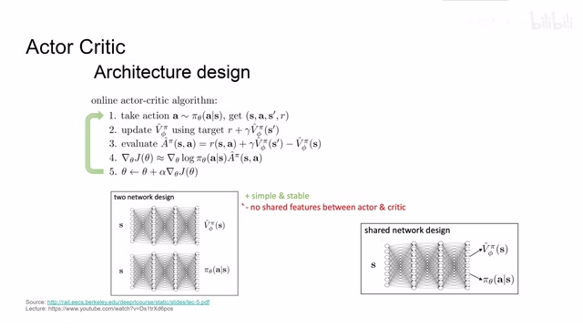
00:07:42–00:08:27 · 画面 014评估我们当前操作的得分那么这里呢我们有不同的设置 credit 的方法，比如这里呢我们设置了一个 state value，那么这个方式呢所有呢就是每次我输入一个 state，我们来评估这个 state 它的得分是怎么样的，这里呢是 discount factor，那么基于这个 state value 和我们当前所做的 target 呢，其实呢我们就可以计算出当前这个 state action pair 它的 q value 是多少，也就是 reward 加上这个 gamma 乘上 next state 这个 state 这个 s prime
00:08:27–00:08:29 · 画面 015
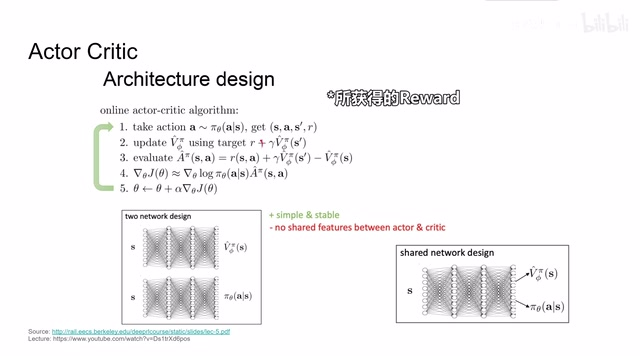
00:08:27–00:08:29 · 画面 01500:08:29–00:09:18 · 画面 016
00:08:29–00:09:18 · 画面 016我们就能够得到 state action pair 它的这个 q value，那么用这个 q value 减去当前的 state value，也就是我们在当前的这个 s 状态下执行这个动作 action a 它能够给我们带来多大的优势，那么这个值呢叫做 advance，那么我们的整个的 policy gradient，那么如果我们整个的 policy gradient 用 advance 这个值去替换原来的 reward，那么训练起来呢它会比原来更加的稳定这个呢也就是非常经典的 Advantage Actor-Critic 或者叫 A2C，当然了这里也有讨论说我们是应该使用两个分独立的网络来去训练 Policy 和 Value Function 呢，还是说我们使用一个网络，他们是各有利弊，在这个阶段呢你只要对 Actor-Critic 有一定印象就可以了，那么来到我们的 Soft Actor-Critic，这个这个 slide 呢来自这个视频，也是非常推荐大家参考一个视频
00:09:18–00:09:19 · 画面 017
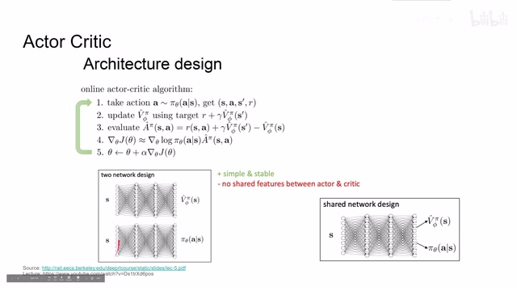
00:09:18–00:09:19 · 画面 01700:09:19–00:09:23 · 画面 018
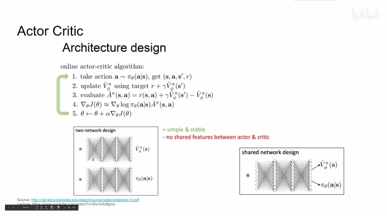
00:09:19–00:09:23 · 画面 01800:09:23–00:09:30 · 画面 019
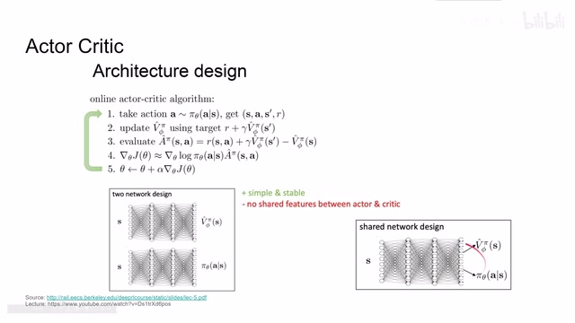
00:09:23–00:09:30 · 画面 01900:09:30–00:09:36 · 画面 020
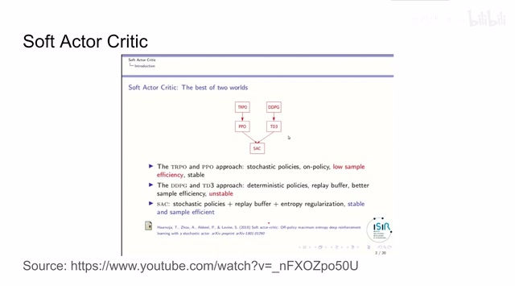
00:09:30–00:09:36 · 画面 02000:09:36–00:09:40 · 画面 021
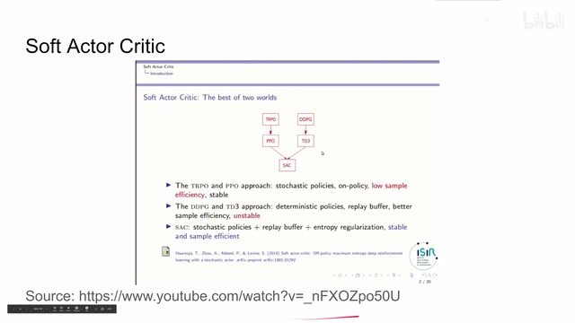
00:09:36–00:09:40 · 画面 021Soft Actor-Critic 我们为什么愿意称它为一大成者，是因为它结合了这两类方法的优点，那么首先看左边这类方法像 TRPO PPO 都是非常经典的 Policy Gradient 的方法，那么这些方法就像我们之前介绍的，它是 Stochastic Policy，它的最大的问题是它是 On Policy 的方法，也就是我每次更新完一次 Policy 之后，我之前用到的样本都不能用了，我必须要重新采集新的样本
00:09:40–00:09:56 · 画面 022
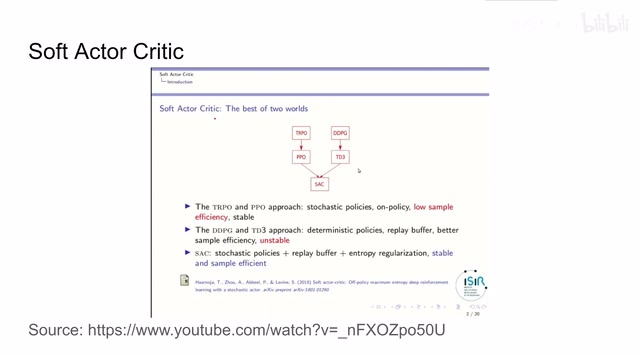
00:09:40–00:09:56 · 画面 02200:09:56–00:10:02 · 画面 023
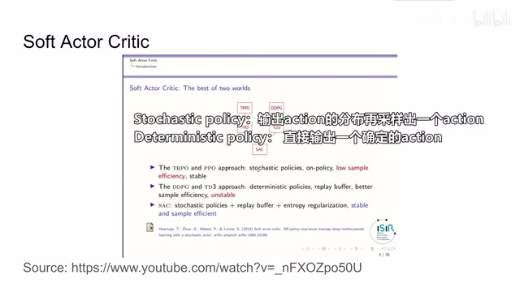
00:09:56–00:10:02 · 画面 02300:10:02–00:11:03 · 画面 024
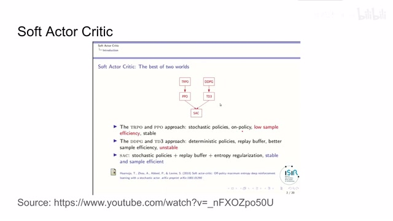
00:10:02–00:11:03 · 画面 024它的 sample efficiency 是非常低的，而如果我们换到 DDPG 或者 TD3 这种类似于 qlearn 的方法，它们是使用 replay buffer 是 off policy 的方法，那么显然它们有更好的样本效率，但是不是那么稳定，那么 SAC 就是结合了这两种方法，我们可以看到在 actor 部分它是使用 policy gradient，而且它可以通过 importance sample 等这些方法来把我们的 online policy 变成 offline policy，这样子呢就可以使用 replay buffer 了，那么同时呢本文呢使用了一种叫做 maximum entropy 最大化熵的方法，这个方法呢能使我们的 actor 尽可能多的去尝试不同的这个操作，能方便我们更好的去探索整个 state space，因为只有我们经历过更多种的可能，我们才能有机会去找到一种最优的 policy
00:11:03–00:11:07 · 画面 025
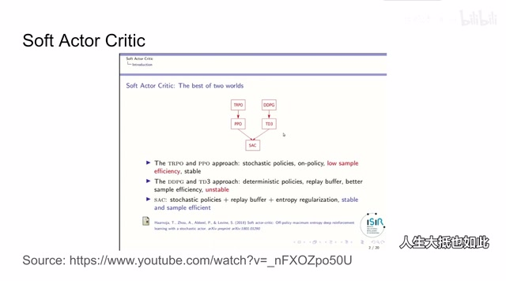
00:11:03–00:11:07 · 画面 025那么以上这一页 slide 就是告诉我们，SACSoft Actor-Critic 它在整个 reinforcement learning 这个发展的过程中处在一个什么样的地位。那么下面我们就来具体讲解，Soft Actor-Critic 相对于我们之前的 Policy Gradient 之前的 Actor-Critic，我们多了一个 Soft。那么这个 Soft 它的定义是在哪里呢？Soft 就是我们这里说的 Entropy 一个熵。
00:11:07–00:11:15 · 画面 026
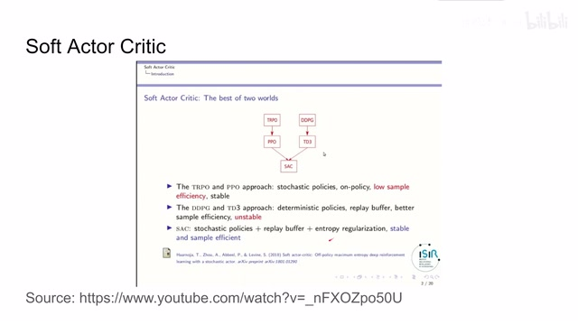
00:11:07–00:11:15 · 画面 02600:11:15–00:13:15 · 画面 027
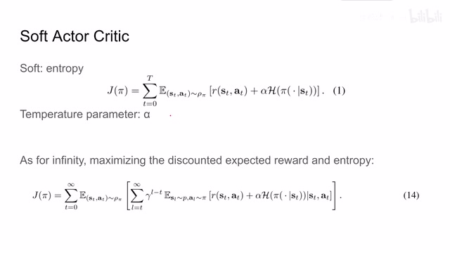
00:11:15–00:13:15 · 画面 027我们可以看到如果是原来的这个传统的 policy gradient 我们优化的这个值一呢它是指对这个 reward 的期望我们希望它的和是最大的但是呢在本文中呢作者加入了这个 entropy 也就是我们的 policy 在输入当前的 state 它给出的 action 的 distribution 它的这个 entropy 那么这里呢我们引入这个 hyperparameter alpha 我们称之为 temperature parameter来控制这个 entropy 和真实的这个 reward 他们两个之间的权重那么当然了这些都是对于有限长的序列来做的这个处理而如果对于无限长的这个序列呢我们为了限制这个 reward 在一个有界的范围内我们需要引入这个 discount factor gamma 用它呢来控制未来的 step 它的期望也就是说对于相同的一个 reward 我们的 policy 呢更希望它在短期发生而不是说很长远的时间内发生
这里呢引用原来课程里面他们讲的一个玩笑就是假如说我要给你一百万那这当然是非常好的事情但是呢我如果说我是在一百万年之后再给你这一百万那听起来可能就不是那么诱人了这就是我们在鬼扯的对吧那假如说我是说不是一百万年之后了我是说十万年之后那听起来靠谱一点但是呢还是鬼扯一些但是比起 100 万年之后啊我显然这个 10 万年之后拿了 100 万是更是更好的一个选择那这比起这个 10 万年之后的 100 万那这就非常好这个呢也就是我们为什么要设置这个 discount factor 好的那么在我们把这个 entropy 这个项目加入到这个 reward function 这个 j 里面的时候它对我们整个模型会有什么样的影响呢那么这里呢我们先看 policy evaluation 也就是这个 credit 它的部分
00:13:15–00:13:22 · 画面 028
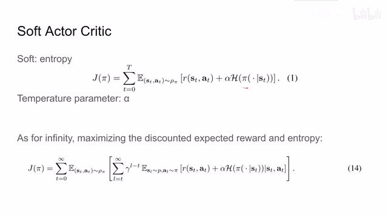
00:13:15–00:13:22 · 画面 02800:13:22–00:13:24 · 画面 029
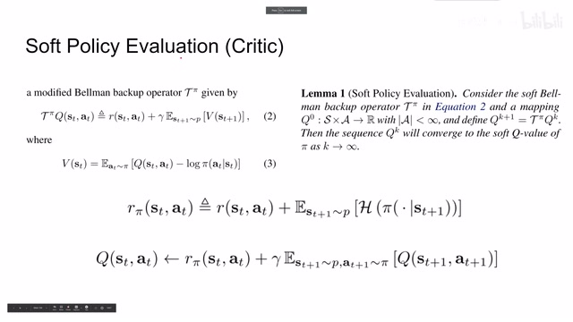
00:13:22–00:13:24 · 画面 02900:13:24–00:13:25 · 画面 030
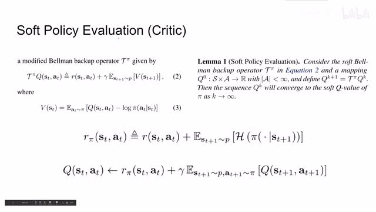
00:13:24–00:13:25 · 画面 03000:13:25–00:13:56 · 画面 031
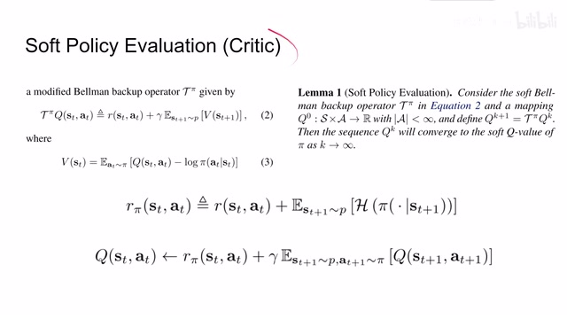
00:13:25–00:13:56 · 画面 031我们可以看到在原来呢我们应该是 Q 等于 R 加上 Gamma 乘以这个 V 这个 V 呢就是应该是这个 Q 它的期望但是现在呢我们这里加了一个 Bellman Backup Operator 这个 T Pi 把我们的这个 Antropy 呢加到了这个期望当中这样子呢我们就有了一个新的 State Value Function 那么加入这个 Antropy 之后我们的模型是否还能够收敛呢那么作者呢这里使用了一个引力
00:13:56–00:13:57 · 画面 032
00:13:56–00:13:57 · 画面 03200:13:57–00:14:15 · 画面 033
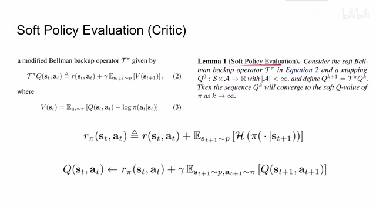
00:13:57–00:14:15 · 画面 033说我们这里考虑的这个 BioMan Backup Operator 只要说这个 A Action Space 它是有界的我们每次使用这个 Backup Operator 来更新我们的 Q Value 那么这个 Q 最终会收敛到这个 Soft Q Value 那么也就是说只要是这个 Action Space 它不是无限的那么我们新加入这个 Entropy 这个项目对整个 Q Learning 的过程是不影响的
00:14:15–00:14:18 · 画面 034
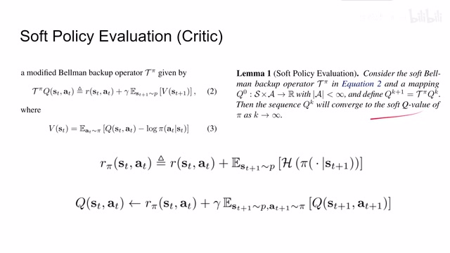
00:14:15–00:14:18 · 画面 03400:14:18–00:14:56 · 画面 035
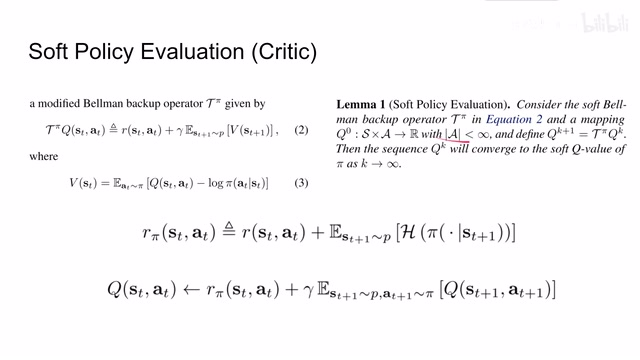
00:14:18–00:14:56 · 画面 035我们最终呢还是能够收敛到一个 q value 上面那么具体怎么来证明这个事情呢作者给我们提供了一个简单的证明就是就是我们把这个 entropy term 从 value function 中拿出来还有把它加到这个 reward function 里面这样子呢我们定义一个新的 reward 这个 reward 呢相比于原来的 reward 呢还加上了这个 entropy 那么因为我们的 action space 呢是有界的这里的这个 entropy 呢也是有界的那么整个这个 reward 也是有借的那么最后我们的 qlearning 写成了这样的形如 reward 加上 discount factor 加下一个状态的这个 q 这样的形式这个呢就是我们传统的 qlearning 的方法那么前人呢已经证明了这个 qlearning 在这个 discount factor 这种配置的情况下能够收敛到一个最优的这个 qvalue 那么我们使用新的 reward 加上这个有借的 entropy 一样也能够收敛到一个 qvalue 上
00:14:56–00:14:57 · 画面 036
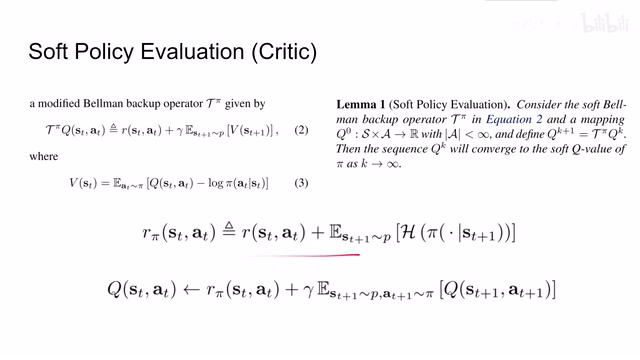
00:14:56–00:14:57 · 画面 03600:14:57–00:15:00 · 画面 037
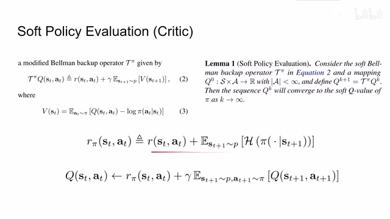
00:14:57–00:15:00 · 画面 03700:15:00–00:15:20 · 画面 038
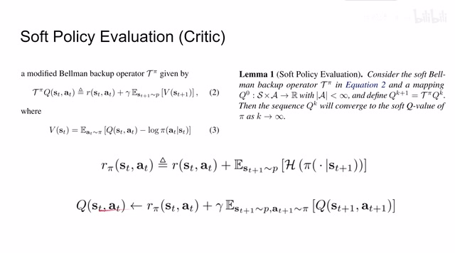
00:15:00–00:15:20 · 画面 03800:15:20–00:15:22 · 画面 039
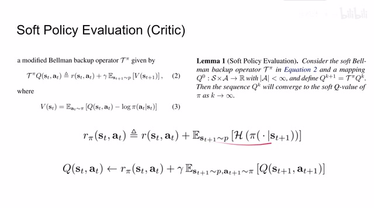
00:15:20–00:15:22 · 画面 03900:15:22–00:15:27 · 画面 040
00:15:22–00:15:27 · 画面 040那么这个呢就是引理 1。那既然解决了这个 policy evaluation 的问题呢，我们再看这个 policy improvement，也就是我们的 actor 部分。那么这里呢，作者设计说我们希望把我们的 policy 推向这个 q function 它的 exponential，也就是做指数。为什么这样设计呢？因为这种设计呢可以保证我每一次更新的时候能够改进我们获得的这个 soft value，也就是那个 g theta
00:15:27–00:15:56 · 画面 041
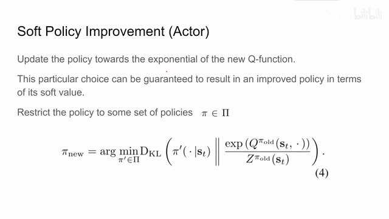
00:15:27–00:15:56 · 画面 041那么当然呢，这个保证呢是有一定代价的。也就是说，我们必须限制这个 policy 在一定的 policy 的集合里面。也就是说，我们这个小的πθ必须在这个大π的这个集合里面。那么在本文的实现中呢，做了这个大π呢就选择了使所有的高斯，也就是我们的 policy 呢是输出一个高斯分布。那么既然我们的 policy 呢输出的是一个 distribution，我们的这个 q function 呢它也是一个 distribution。
00:15:56–00:16:02 · 画面 042
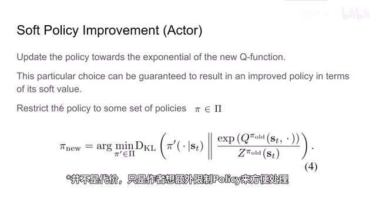
00:15:56–00:16:02 · 画面 04200:16:02–00:16:24 · 画面 043
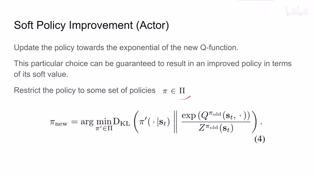
00:16:02–00:16:24 · 画面 043那么为了把这个 policy 推向这个 q function，我们就需要衡量两个 distribution 之间它们的距离。那么最常用的衡量两个 distribution 之间它们相似度的方法就是我们熟悉的这个 kl divergence。那么这里呢，kl divergence 我们先就从左边的 policy 到右边的这个指数的这个 q function 它们之间的 kl divergence。那么注意呢，这里呢只有一个 z
00:16:24–00:16:25 · 画面 044
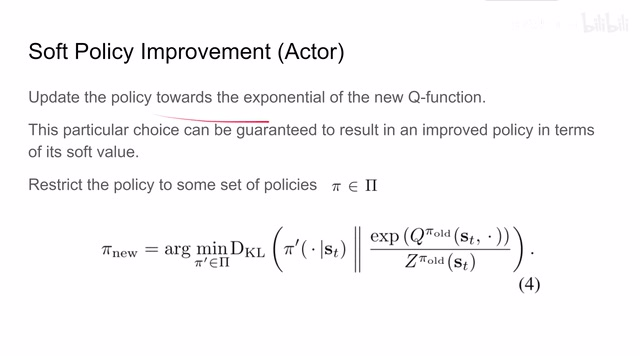
00:16:24–00:16:25 · 画面 04400:16:25–00:17:23 · 画面 045
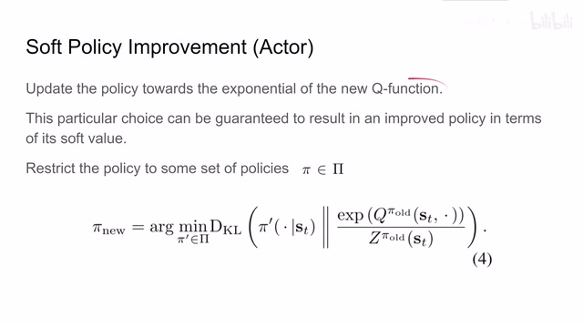
00:16:25–00:17:23 · 画面 045这个子呢就是用来确保我们这个 exponential 之后的这个 q function 它的和为一，它还是一个概率分布。那么我们的任务呢也很明显，就是在所有这个 policy 的这个集合当中找到一种 policy，而这种 policy 呢能够使得这个 kl divergence 它的值最小。那么它就是我们的新的 policy。这个想法呢是非常好的，但是我们能不能说保证能够找到这样一个 result能够使我们改进获得 policy 能够获得更好的这个 soft q value 呢？那么作者说这当然是可以的。这个呢是本文的引理二。也就是说如果我们的新的 policy 是这个式子它的这个最优的解，那么我们能保证新的 policy 这个 soft q value 至少呢是不比原来的这个 policy 的 soft q value 要差的。那么下面呢我们来正面这个事情
00:17:23–00:17:46 · 画面 046
00:17:23–00:17:46 · 画面 04600:17:46–00:17:48 · 画面 047
00:17:46–00:17:48 · 画面 047这里呢我们把这个 kl divergence 定义成另一个式子 j，它目标的这个 q value 呢是由这个 old policy 产生的。那么注意呢这个 j 跟我们一开始说的这个整个这个 policy gradient 它定义的这个 j 是完全不同的东西，不要把这两个来混淆了。那么下面我们来看具体怎么证明这个东西，根据 kl divergence 的定义我们可以把这个式子来展开看到这里
00:17:48–00:17:49 · 画面 048
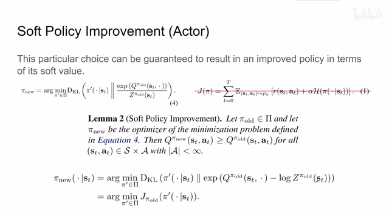
00:17:48–00:17:49 · 画面 04800:17:49–00:17:51 · 画面 049
00:17:49–00:17:51 · 画面 04900:17:51–00:17:53 · 画面 050
00:17:51–00:17:53 · 画面 05000:17:53–00:17:58 · 画面 051
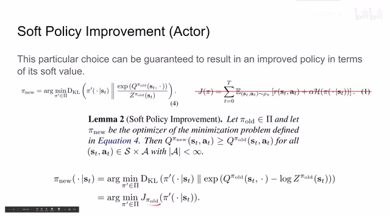
00:17:53–00:17:58 · 画面 05100:17:58–00:17:59 · 画面 052
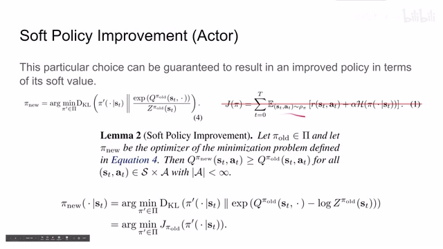
00:17:58–00:17:59 · 画面 05200:17:59–00:18:07 · 画面 053
00:17:59–00:18:07 · 画面 05300:18:07–00:20:07 · 画面 054
00:18:07–00:20:07 · 画面 054首先 cal divergence 是一个积分，我们这里呢是对 action 来进行积分。那么积分的每一项呢是左侧的概率乘上这个 loglog 里面呢有右侧的这个概率分布涂上左侧的概率分布。那么因为是右边的概率分布在上嘛，所以我们前面有一个符号。然后呢我们把这个 log 这一项打开，这个 log 呢跟这个 exponential 他们就相互 cancel 掉了。所以呢我们会有一个 q pi old 还有这个 log z那么因为我们把这里把符号拿掉了，所以他们的符号呢也变掉了。那么这个 policy 呢，那么这个 pi prime 也就是新的 policy 分之一呢，我就把它写成-log 的形式，正好呢跟前面的这个符号 cancel 掉了。所以呢我们就得到了这样一个表达式。那么这个表达式呢就是我们新的 policy 乘上 log 新的 policy 加上这个 novalize 的这个项目减去旧的这个 q value
那么可以看到呢，这个积分呢，是一个形如一个期望的形式，这个时候呢，我们把它塞回期望里面，这样采的样，这样采的样本呢，是我们的新的 policy 来产生的 action，那么它期望的内容呢，就是它成的这一部分，我们把这一串原创活动写下来，然后我们看到，因为我们的新的 policy 和旧的 policy，它们都来自于这个大的 policy 的集合，这个大的这个派所以我们找到了一种 policy，它至少不会说获得比原来更差的结果，我们的新的 policy 作为输入的时候，它至少是不会大于原来旧的 policy 的，那么在这个不等式的基础上，我们把它两边展开，都展成上面这个期望的形式，我们就能够得到这样一个期望的形式，这个期望虽然看起来非常吓人，但是如果我们仔细来看，首先这两项
00:20:07–00:20:12 · 画面 055
00:20:07–00:20:12 · 画面 055这个 z-nobilization 它是只跟 state 相关的，而我们这个 state 呢，在这个 j-function 里面都是由过去的旧的 policy 产生的，所以呢，它们两项可以直接 cancel 掉，对面这里呢，我们把本文的这个 soft-state-value-function 它的定义拿出来，我们来对比一下，这个 q 这个 q 这个 log 这个 log 对吧，那么它正好就是这个 state-value-function
00:20:12–00:20:13 · 画面 056
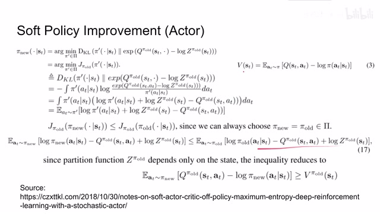
00:20:12–00:20:13 · 画面 05600:20:13–00:20:37 · 画面 057
00:20:13–00:20:37 · 画面 05700:20:37–00:20:38 · 画面 058
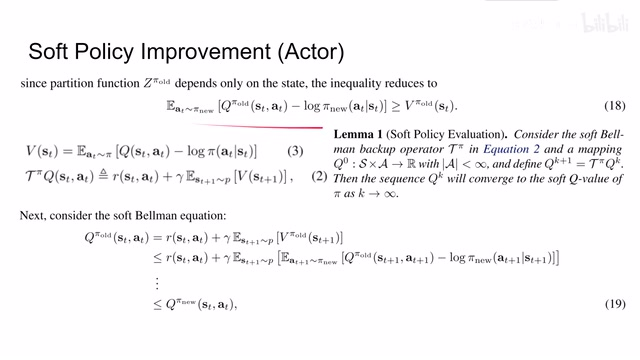
00:20:37–00:20:38 · 画面 058有了这样一个不能试呢，我们就可以把过去的 trajectory 它相关的这些变量和我们新的 policy 产生的这个 trajectory 它产生的变量就联系起来了，那么这里呢，我们考虑一下这个 soft bellman equation，我们从过去的这个 q value function 开始，那么它呢，是由这个 reward 加上这个 gamma 再乘以这个乘以这个过去的这个 state value function 这个 v 它的期望
00:20:38–00:21:11 · 画面 059
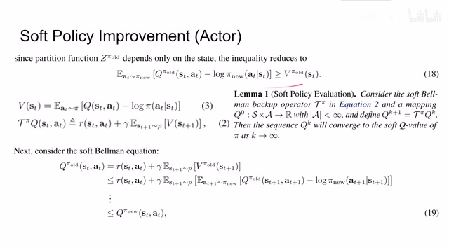
00:20:38–00:21:11 · 画面 059来得到的，那么这一项呢，就是在这里我们把它替换成新的 trajectory 产生了这个期望，那也就是这里这样子呢，我们再看这个式子中它就没有了过去的 policy 产生的这个 action，全部都是新的 policy 产生的 action，只有这个 q 呢被推到了 st plus 1 和 apt plus 1 下一个时刻，那么你可以不断的使用上面的式子
00:21:11–00:21:13 · 画面 060
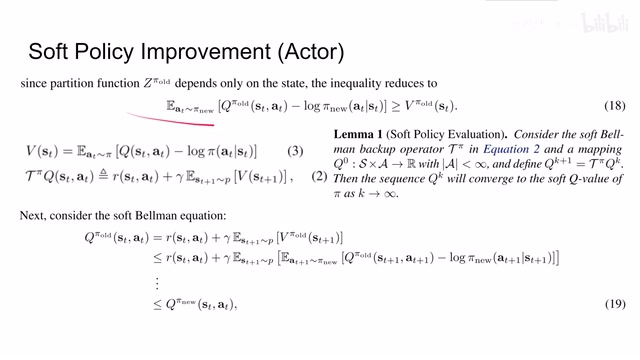
00:21:11–00:21:13 · 画面 06000:21:13–00:21:15 · 画面 061
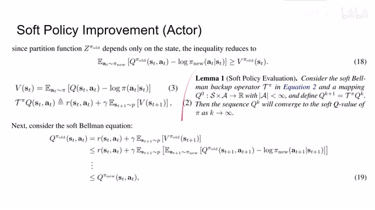
00:21:13–00:21:15 · 画面 06100:21:15–00:21:16 · 画面 062
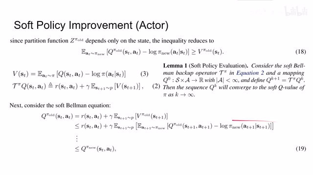
00:21:15–00:21:16 · 画面 06200:21:16–00:21:30 · 画面 063
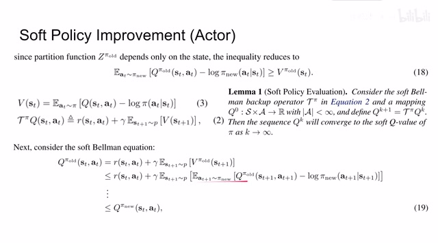
00:21:16–00:21:30 · 画面 06300:21:30–00:21:32 · 画面 064
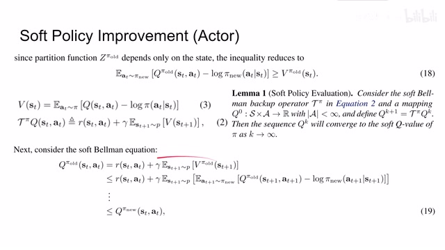
00:21:30–00:21:32 · 画面 064把这个 q value 展开再不断用上面这个等式呢替换掉里面的这一些 state value 那么写着写着呢你会发现最终当我们把所有的这个 old policy 的 q value 都替换完之后呢它是一个形如这样的形式也就是说它已经变成了基于新的 policy 的这个 soft Bellman equation 它的这个形状那么然后呢我们根据我们之前推导的引理一我们呢就可以把这一些
00:21:32–00:21:34 · 画面 065
00:21:32–00:21:34 · 画面 06500:21:34–00:21:43 · 画面 066
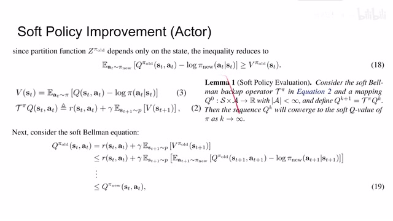
00:21:34–00:21:43 · 画面 06600:21:43–00:21:44 · 画面 067
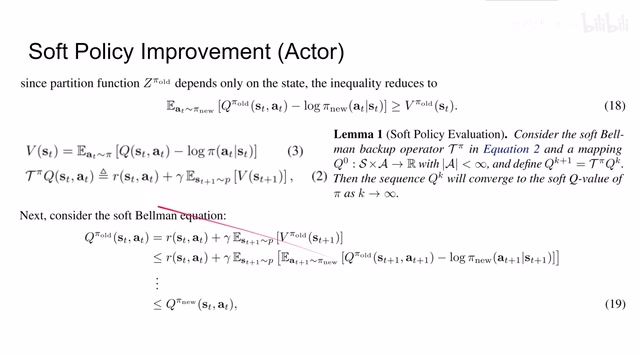
00:21:43–00:21:44 · 画面 06700:21:44–00:21:57 · 画面 068
00:21:44–00:21:57 · 画面 06800:21:57–00:21:58 · 画面 069
00:21:57–00:21:58 · 画面 06900:21:58–00:22:06 · 画面 070
00:21:58–00:22:06 · 画面 070全部收敛到这个新的 policy 的 q value 上面，那么这样子呢，也就能保证我们的新的 policy 的 q value 至少不差于过去的 policy 的 q value，我们确实保证改进了当前的这个 soft policy，那么综合我们之前的两个引理，那么作者呢这里就说，我们只要重复的使用这个 soft policy evaluation 和 soft policy improvement
00:22:06–00:22:07 · 画面 071
00:22:06–00:22:07 · 画面 07100:22:07–00:22:14 · 画面 072
00:22:07–00:22:14 · 画面 07200:22:14–00:22:46 · 画面 073
00:22:14–00:22:46 · 画面 073一个呢是改变我们的 q value，一个呢是改变我们的这个 policy action，我们最终可以收敛到一个 policy，使得呢，这个 policy 它的 soft q value 是大于其他 policy 的 soft q value，并且我们的这个 kl divergence 也就是这个 j 它的值呢是能够达到最小的，那么怎么来证明这个事情呢，我们再回到我们证明引力 2 的时候，我们如果说能够找到一个最优的 policy
00:22:46–00:22:47 · 画面 074
00:22:46–00:22:47 · 画面 07400:22:47–00:23:15 · 画面 075
00:22:47–00:23:15 · 画面 075使得这个 policy 呢，使得这个 policy 呢，它的这个 j function 它的这个值是大于这个集合中其他任何 policy 的 value 的，也就是说这个不等式呢，它把这个等号也去掉了，那么最左边这个呢，就是最优的一个 policy，那么同样的，我们把这个不等式呢，就换掉这个不等式呢，这里的等号也可以去掉，这个不等式这里的等号也可以去掉
00:23:15–00:23:16 · 画面 076
00:23:15–00:23:16 · 画面 07600:23:16–00:23:21 · 画面 077
00:23:16–00:23:21 · 画面 07700:23:21–00:23:23 · 画面 078
00:23:21–00:23:23 · 画面 07800:23:23–00:23:38 · 画面 079
00:23:23–00:23:38 · 画面 079那么在我们迭代这个 soft bioman equation 的时候这些不等号就都可以去掉了那么最终呢就得到这个 q pi old 它是严格小于这个 q pi new 的那么这个呢就是这个理论的证明这个理论呢叫做 soft policy iteration 也就是说随着我们不断的迭代 policy evaluation 和 policy improvement 我们的 policy 和我们的 q value 都能够收敛到最优的一个值
00:23:38–00:24:15 · 画面 080
00:23:38–00:24:15 · 画面 080好的那么以上呢就是作者对于说我加了这个 entropy 这个 term 从原来的 actor credit 变成 soft actor credit 之后我的这个整个系统的收敛的性能对于整个系统的收敛性能的一个论证简单的结论就是我加了一个 entropy term 之后系统一样能收敛那么下面呢我们就该考虑如何去着手实现这么一个网络
00:24:15–00:24:28 · 画面 081
00:24:15–00:24:28 · 画面 081那么这里呢因为我们用到了 state value 我们用到了 q function 我们还有需要有一个 policy 所以呢作者的想法就是我分别设置三个网络来去 beat 这三个不同的 function 那对于这个 state value function 呢我们用这个 sci 来表示这个网络中的参数对于 softq value function 呢我们用这个 theta 来表示这个网络中的参数
00:24:28–00:24:29 · 画面 082
00:24:28–00:24:29 · 画面 08200:24:29–00:25:13 · 画面 083
00:24:29–00:25:13 · 画面 083而对于这个 policy 呢我们用这个 fi 来表示好那我们看对于这个 soft value 方式呢我们其实有一个 target value 然后对它做 mse 就可以更新这个 state value 方式所以呢我们就会优化一个形如这样的一个结构右边呢是我们目标的 state value 方式可以看到呢其实就是这个 soft q value 减去这个 entropy term 那么我们要对它求导呢对吧其实整个这个式子里面只有这一项
00:25:13–00:25:14 · 画面 084
00:25:13–00:25:14 · 画面 08400:25:14–00:25:39 · 画面 085
00:25:14–00:25:39 · 画面 085是这个赛参与的项目所以呢我们会得到一个形容这样的式子那么它的导数呢是一个期望在这里呢我们就使用很多个样本来代表这个期望所以呢这是一个 unbiased gradient estimator 也就是说这里我们看到有一个 hat 是因为这个 gradient 呢是我们通过很多个样本来给它估计出来的那么相同的道理呢我们再来看到这个 q 方式
00:25:39–00:26:30 · 画面 086
00:25:39–00:26:30 · 画面 086Q function 呢我们使用这个 softBellman residual 也是一个 targetQ function 来解决它那么我们也同样的使用 MSE 就可以解决了这个 function 这里我们看到我们优化的目标呢是这个式子其中它的 target 呢就是根据定义就是 reward 加上 gamma discount factor 乘上我们下一个状态的 state value 它的期望那么同样的在上面这个式子里面呢我们对θ来求一个导数就会得到一个形如这样的式子那么还是一样的我们实际的这个导数呢它是一个期望我们呢这里使用很多个样本来去估计这个期望所以呢这也是一个 unbiased gradient estimator 它长这个样子那么最后呢也就是最复杂的了我们的 policy improvement
00:26:30–00:26:58 · 画面 087
00:26:30–00:26:58 · 画面 087在之前我们理论的时候我们谈及到我们希望我们的 policy 呢去 minimize 这样一个方式这个方式呢它是一个 kl divergence 的期望那么为了优化这样一个 policy 呢我们首先能想到的方法就是在视频最开始我们说的这个 likelihood ratio gradient estimator 或者我们叫 score function method 或者叫 lock derivative trick 或者叫 reforce 等等等等它的核心思想呢就是在我求这个期望的这个倒数的时候
00:26:58–00:26:59 · 画面 088
00:26:58–00:26:59 · 画面 08800:26:59–00:27:47 · 画面 089
00:26:59–00:27:47 · 画面 089我把这个蓝色的项目变成这个黄色的项目，然后呢，又把它塞回成一个期望，这样子呢，我们就又可以用那个 unbiased gradient estimator 了。但是呢，正如我们之前所有的对 policy gradient 方法的批判一样，我们如果使用了这种方法呢，它不可避免的会，首先，它是一个 on-policy 的问题，那么即便哪怕我们使用了 importance sampling，那么它还存在这个 variance 太大的问题，那等等等等那么因此呢作者提出哎我这里用另一种手段叫做 reparameterization 也就是我重新对变量参数化来把一个 action 呢用其他的一个中间的变量来表示它那么更具体来说呢这里我们有一个 y 这个 y 呢它是一个正态分布的变量那么这个 y 呢跟我们 policy network 中的这个 fi 它是没有任何关系的它们两个呢是独立的那么那么作者就提出了在本文中呢我要把 action
00:27:47–00:27:48 · 画面 090
00:27:47–00:27:48 · 画面 09000:27:48–00:27:56 · 画面 091
00:27:48–00:27:56 · 画面 09100:27:56–00:28:00 · 画面 092
00:27:56–00:28:00 · 画面 09200:28:00–00:28:09 · 画面 093
00:28:00–00:28:09 · 画面 093实际写成这个μφ加上ε乘以这个σφ这样的形式。那具体来看呢，就是我们的 policy network，因为它的输出是一个高斯 distribution，那么高斯 distribution 呢，就包括这个μ它的平均值和这个σ它的方差这两个值，是都是跟φ相关的。那我要加一个随机性在里面，这个时候呢，我们就把这个ε带进来。那么很显然，这样处理之后呢，我们得到的依然是一个高斯 distribution
00:28:09–00:28:15 · 画面 094
00:28:09–00:28:15 · 画面 09400:28:15–00:28:16 · 画面 095
00:28:15–00:28:16 · 画面 09500:28:16–00:28:23 · 画面 096
00:28:16–00:28:23 · 画面 09600:28:23–00:28:24 · 画面 097
00:28:23–00:28:24 · 画面 09700:28:24–00:28:25 · 画面 098
00:28:24–00:28:25 · 画面 09800:28:25–00:28:31 · 画面 099
00:28:25–00:28:31 · 画面 09900:28:31–00:28:32 · 画面 100
00:28:31–00:28:32 · 画面 100但是呢，我们已经巧妙的把这个α它的 sample 的过程和我们的这个φ给它分开了，它的随机性呢，全部都来自于这个ε。那么这个 hyperbolic tangent 呢，就是把我们这个无限的 action space 给它压缩到有限的-1 到 1 之间。那么具体来看，我们如何做这个 reparameterization，那么根据 KL divergence 的定义呢，我们可以把这个 gπ给它写成这样一个
00:28:32–00:28:33 · 画面 101
00:28:32–00:28:33 · 画面 10100:28:33–00:28:49 · 画面 102
00:28:33–00:28:49 · 画面 10200:28:49–00:28:51 · 画面 103
00:28:49–00:28:51 · 画面 10300:28:51–00:28:53 · 画面 104
00:28:51–00:28:53 · 画面 10400:28:53–00:29:03 · 画面 105
00:28:53–00:29:03 · 画面 105期望的形式，而且因为那个 ze 那个 normalize 那个项目呢，它是只跟 state 有关的，所以呢，在这里呢，我们就可以把它直接省略掉。然后呢，我们就把这个 action 替换成这个 f，它的输入呢，是 state 和我们之前说的那个随机的高斯分布 y。那么这个目标呢，就是我们想要优化的函数。那么同样呢，我们对它求导，它的导数呢，非常意外的是写成这样一种形式
00:29:03–00:29:04 · 画面 106
00:29:03–00:29:04 · 画面 10600:29:04–00:29:22 · 画面 107
00:29:04–00:29:22 · 画面 10700:29:22–00:29:23 · 画面 108
00:29:22–00:29:23 · 画面 10800:29:23–00:29:31 · 画面 109
00:29:23–00:29:31 · 画面 10900:29:31–00:29:34 · 画面 110
00:29:31–00:29:34 · 画面 110当然，你如果说在实际的编程中，你写到上面这一步，然后让它自动的去计算倒数就可以了。但是既然我们在讲论文，我们就讲得深入一点，把它的具体的表达式写出来。那么就有朋友会想，我们是怎么通过 12 的这个式子来到 13 的这个式子呢？这里就根据这位网友他的资料，我们有一个简单的证明。那么假设我们在优化这样一个式子 L
00:29:34–00:29:38 · 画面 111
00:29:34–00:29:38 · 画面 11100:29:38–00:29:54 · 画面 112
00:29:38–00:29:54 · 画面 11200:29:54–00:29:55 · 画面 113
00:29:54–00:29:55 · 画面 11300:29:55–00:29:59 · 画面 114
00:29:55–00:29:59 · 画面 11400:29:59–00:30:58 · 画面 115
00:29:59–00:30:58 · 画面 115这个期望 E 产生的这些 sample 和这个期望里面的这些东西，它们都和这个θ这个值相关。那么这样我们在对这个 L 对θ求导数的时候，我们把这个期望展开，我们发现会写成这样的形式。那么我们对整个里面的这些项目求导数，那么根据乘法的导数法则，首先是 QθZ 乘以ΔθFθZ然后呢，对 Z 积分。那么这一项呢，因为这个 QθZ 它在外面，那么它就是一个形如希望的形式，那么很容易的，我们就可以把这一项塞成这个 EQθZ 里面呢，是 Fθ对θ导数这样的一个期望。我们很容易把这一部分呢，塞到这么一个期望里。但是呢，对于这一部分，它就比较棘手了，我们来看怎么来处理这一部分
00:30:58–00:32:17 · 画面 116
00:30:58–00:32:17 · 画面 116那么回忆一下，刚刚我们是通过引入了一个和要训练的 network 没有关系的这么一个 distribution，我们叫 y 来变换的 action 的表达式。那么这里呢，同样的，我们引入一个变量 u，这个 u 它是和θ没有关系的，但是呢，它可以用来替换原来的这个 qθz 它的这个 density function，也就是 probability density function pdf。那么具体看它的定义，我们把这个 u 定义成 fθz因为虽然这个 U 和这个θ是相互独立的但是你如果想要描述 Qθ那你必须还是引入θ在里面那么因为这个式子呢它是一个概率所以呢我们就可以把它写成概率密度函数的形式那根据定义它就是原来概率密度函数 Qθ对这个 Z'它的积分那么也就是从负无穷积到这个 Z 那么这个呢是我们定义的式子那么有的这个式子呢我们在这个式子左右两侧同时对θ求导数
我们就可以得到第三行这个式子那么左边呢是 fθz 对这个θ求偏导数那么右边呢也是我可以把这个因为θ和这个 z'没有关系我可以直接把这个θ扔进来那么是形容这样一个式子那么除了直接的求导数之外呢我们呢还可以利用莱布尼茨法则如果我们把这样一个积分对 x 来求导数而这个积分的上下限呢分别都是 x 的函数
00:32:17–00:33:30 · 画面 117
00:32:17–00:33:30 · 画面 117那么呢我们就可以写成这样一长串的式子那么回到我们刚刚这个这个式子 Z 是这个θ的函数但是这个 U 它不是θ的函数所以当我们对这个等式左右两边对这个θ来求导数的时候左边呢就是一个 0 那么右边呢我们正好套用这个莱布尼茨法则对于这个 Bx 也就是这个 Z 它是θ的 function 所以呢会有这一项叫做 fx bx 然后 bx 对 x 的导数那么这里呢也就是这个 qθ在这里 bx 呢就是这个 z 乘上 bx 对 x 的导数也就是 z 对θ的导数那么这是这一项那么再看积分下限这个负无穷呢那么它对于θ求导呢就会求出 0 来这一项呢就消失了那么最后呢这一项我们把这个 x 拿进来变成了 partial f partial x
也就是说把这个 fxt 对 x 求偏导数这样一项积分那么这个式子带进来就变成了形如这样的一个式子那么现在呢我们通过这样一个定义的式子一个通过莱布尼茨法则一个通过两边直接的对θ求导数有了这两个方程我们看到把中间这一项和这一项它们呢是会画等号的那么这样子呢我们就可以得到这个式子这个式子呢其实是非常关键的
00:33:30–00:33:31 · 画面 118
00:33:30–00:33:31 · 画面 11800:33:31–00:33:35 · 画面 119
00:33:31–00:33:35 · 画面 11900:33:35–00:34:02 · 画面 120
00:33:35–00:34:02 · 画面 120他就把我们几个不同的方式把他们之间的关系呢全部串联起来了那么回到一开始我们想要解决的问题这是我们想对一个期望他求导数那么前面这一项我们已经解决了这一项呢我们来看首先呢这一项写出来就是这样一个积分的形式我们呢把这个符号提一个出来
00:34:02–00:34:06 · 画面 121
00:34:02–00:34:06 · 画面 12100:34:06–00:34:13 · 画面 122
00:34:06–00:34:13 · 画面 12200:34:13–00:34:14 · 画面 123
00:34:13–00:34:14 · 画面 12300:34:14–00:35:30 · 画面 124
00:34:14–00:35:30 · 画面 124往到前面这里变成符号然后呢把这个函数呢也拆成一个积分的形式我们把这个 f 伞对这个 z 求导数那么对自己再积分积分的上下线呢就是从这个 z prime 到这个无穷大那么他积出来的结果呢应该就是 f 伞无穷大减去 f 伞 z prime 但是呢因为他在无穷大的时候呢他的值接近于 0 所以呢我们把前面一项扔掉我们就只剩下这个负的 FθZ'那么这呢就是这一步的替换然后呢我们就得到一个这个二重积分的形式那显然这个 Z 和这个 Z'它们不是一个东西嘛但是呢它们存在着联系所以呢我们就可以通过交算积分把这个式子变成这个式子那么在此基础上呢我们再拆除一个 Qθ除以 Qθ来同时根据左侧的这个式子呢我们可以把这一拖
给它替换成 partial fθ 和 partial θ然后我们把下面分母上的 qθ拿到 partial fθ 和 partial θ 上也就是使用这个等式我们就可以成功的把这一坨来替换成 delta z 比成 delta θ也就是这样的一个形式最后的成果就是我们得到了一个形如
00:35:30–00:35:31 · 画面 125
00:35:30–00:35:31 · 画面 12500:35:31–00:35:37 · 画面 126
00:35:31–00:35:37 · 画面 126qθ z 乘上一串变量的这样一个积分那么终于我们有了一个 qθ作为变量它的这么一个期望也就是说最后呢我们这个式子呢就可以写成了这样的形式一个期望的导数是两个期望相加的形式那么对比一开始我们要优化的这个式子啊这是一个就是一个期望那么它的导数呢就是这两个期望相加的形式对于前面这一项来说就是我对里面这一个方式
00:35:37–00:35:38 · 画面 127
00:35:37–00:35:38 · 画面 12700:35:38–00:35:40 · 画面 128
00:35:38–00:35:40 · 画面 12800:35:40–00:35:45 · 画面 129
00:35:40–00:35:45 · 画面 12900:35:45–00:35:47 · 画面 130
00:35:45–00:35:47 · 画面 13000:35:47–00:35:54 · 画面 131
00:35:47–00:35:54 · 画面 13100:35:54–00:35:57 · 画面 132
00:35:54–00:35:57 · 画面 13200:35:57–00:36:10 · 画面 133
00:35:57–00:36:10 · 画面 133那对这个赛求导数那么因为右边这个式子里面他没有赛所以呢这个部分对应的就是这一块那么第二个部分呢就是我们要首先对这个 z 求到然后呢再这个 z 对这个 c 它来求到这里的 z 呢就是我们的这个 f 就是这个式子那么所以呢我们先整个式子对这个 a 来求到
00:36:10–00:36:13 · 画面 134
00:36:10–00:36:13 · 画面 13400:36:13–00:36:14 · 画面 135
00:36:13–00:36:14 · 画面 13500:36:14–00:36:15 · 画面 136
00:36:14–00:36:15 · 画面 13600:36:15–00:36:26 · 画面 137
00:36:15–00:36:26 · 画面 13700:36:26–00:36:35 · 画面 138
00:36:26–00:36:35 · 画面 138然后呢，再把这个 a 对着赛求到，那么下面这个行呢，就是对应的是这一项，那么最终呢，既然我们是写成了两个期望的形式，我们也是可以通过几个样本他们的平均值来估计这个期望，所以呢，我们就得到了一个 unbiased estimator，这个呢，就是从原理上告诉我们我们优化了什么，好的，那么以上呢，就是本文最复杂的这个数学环节
00:36:35–00:36:37 · 画面 139
00:36:35–00:36:37 · 画面 13900:36:37–00:36:51 · 画面 140
00:36:37–00:36:51 · 画面 14000:36:51–00:36:52 · 画面 141
00:36:51–00:36:52 · 画面 14100:36:52–00:36:54 · 画面 142
00:36:52–00:36:54 · 画面 14200:36:54–00:38:38 · 画面 143
00:36:54–00:38:38 · 画面 143那么过了这个环节之后呢，我们就可以轻松愉快的看这个 soft active credit 它的算法的流程了，这里呢，我们维护了三个 networkstate value functionsoft cube value function 和这个 policy，但是在这个算法中呢，我们还多了一个 sci bar，这个呢，就像我们在 DQN 里面做 target network 一样，它是用来增加训练时候的稳定性的，那么对于这个 soft active credit 来说，首先呢，我们对环境交互产生很多个样本，那么在我们优化的时候呢
我们会从这个 replaybuffer 中把样本拿出来，首先优化这个 value function，这个呢，mse 做过可以了，然后呢，是这个 qy 的方式，这里呢，作者说虽然我只维护一个 qy 的方式是 ok 的可以训练的，但是呢，如果我们维护两个 qy 的方式，这两个网络的结构是一样的，但是呢，因为你用的是随机梯度下降了，所以他们训练出来的结果可能是不一样的，我如果使用这两个方式呢它可以显著的加速我们的训练，那么也就是说，当每当我们需要这个 q value function 时候呢，我选择这两个方式他给出的最小的一个值作为我们的这个 q value 方式的输出，那么同样的呢，我们根据刚刚的介绍，我们也可以更新我们的 policy，那么最后呢，是我们采用指数更新的方法或者说是 momentum 的方法来把我们的这个 target network，也就是 state value function 它的这个 target network
来进行向前滚动更新一下，作者这里也说了，在实际训练过程中呢，对于每一步这个环境的操作来说，我可以多训练几步这个 gradient，这也是 reinforcement learning 中的一个 trick，好的，那么最后的最后呢，就是 action 的问题，因为我们之前的 policy 它输出的是一个 gaussian distribution，给 gaussian distribution 呢，虽然概率非常低，但是呢，它可能给我们一个很大很离谱的值
00:38:38–00:39:27 · 画面 144
00:38:38–00:39:27 · 画面 144所以我们有必要把高斯 distribution 给它限制到成为一个有限的输出，那么最简单的方法就是 hyperbolic tangent，我们可以把整个实数域压到-1 到 1 之间，那么这里我们因为是从一个 random variable 换到另一个 random variable，所以在这个转换过程中我们要从 jacobi 矩阵它的行列式的值，因为 hyperbolic tangent 它是只对一个 element 生效的它不会涉及说很多个 element 相互之间的作用，所以这是一个对角阵，那么它的 log likelihood 就是长的这个样子，好的，那么终于介绍完所有理论上的部分，我们来看作者汇报的实验结果，那么这里作者对比了像 ttpg ，pposql 还有 td3 这些方法，那么橙色的是本文提出的 soft actor predict，那显然在大部分的环境下，本文的方法是 outperform 其他的方法的
00:39:27–00:39:29 · 画面 145
00:39:27–00:39:29 · 画面 14500:39:29–00:39:32 · 画面 146
00:39:29–00:39:32 · 画面 14600:39:32–00:39:51 · 画面 147
00:39:32–00:39:51 · 画面 147那么作者呢还做了这个消融实验，说我的 policy network 输出一个 stochastic 就是随机的 policy 还是一个确定的 policy。随机的呢意思就是我输出一个 distribution，比如说像 gaussian distribution，然后我实际的 action 呢是通过在这个 distribution 中采样获得的。那么像这个 deterministic 呢就是我直接使用输出的 gaussian distribution 这个 mean 它的这个值来作为我们实际的策略。
00:39:51–00:40:34 · 画面 148
00:39:51–00:40:34 · 画面 148那么作者看到呢，在这个环境里面，虽然这个 deterministic policy 它有的时候可能会达到非常好的效果，但是它训练起来呢是很不稳定的，所以在训练的过程中呢，我们还是使用 stochastic policy 是比较稳妥。但是呢，作者又汇报了一件另一件有趣的事情，就是当我们训练完整个 network 之后，我们做 evaluation，这个时候呢，我们发现这个 deterministic 这个 policy 它的效果呢，是要比这个 stochastic
00:40:34–00:41:45 · 画面 149
00:40:34–00:41:45 · 画面 149要好一些的。所以呢，这也算是一个非常有趣的发现。然后呢，作者还测试了这个 reward scalereward scale 呢，本质上呢描述的是这个 temperature，我们在最早介绍的这个 alpha temperature 这个 hyper parameter，他呢控制的就是 reward 和我们的 entropy 之间他们的 tradeoff，就是我们也就是说，我们会更看重哪一项。那么显然，本文的方法呢，是对这个 hyper parameter是敏感的。但是呢，就目前的这篇文章来说，我们只能是人手工的去确定说我们选哪个 hyper parameter 合适。那么在未来的工作呢，作者有想办法去克服这件事情。那么最后呢，作者还测试了这个 target smoothing，也就是我们以多大的速率去更新这个 target network，可以看到呢，只要别更新太快，一般都是没什么问题的。那么好的，终于来到结论，本文呢提出了一种 off policy
00:41:45–00:42:27 · 画面 150
00:41:45–00:42:27 · 画面 150而且是 Maximum Entropy 的一种 reinforcement learning 的方法,the soft actor predict。那么还是正如我们刚才说的,它虽然能够 outperform 其他这些方法,但是目前我们还没有解决如何确定 hyperparameters 的问题。那么这个问题将在下一篇论文中得到解答。好的,那么恭喜你看完整个视频。如果你对这篇论文感兴趣的话,也是非常推荐你去查看论文的原文。
在评论里面，我把准备这期视频所用到的所有的参考材料都汇总起来，感兴趣的朋友可以去查看。那么感谢您的收看，再见。
00:42:27–00:42:27 · 画面 151
00:42:27–00:42:27 · 画面 151转写与来源说明 · 0 个自动复核提示
保留 91 个原始语音片段，0 个片段触发自动复核提示。提示仅用于定位可能的术语、重复或识别问题，不等于已确认错误。
讲解画面为源视频截图（640×360），不是可编辑 PPT 文件。全片按每秒 2 帧扫描内容变化，逐步展开页保留；连续动画保留代表画面。清晰度受源视频限制。
原视频：paper/合集_2026-10-16_机器人学/[论文简析]SAC Soft Actor-Critic Part 1[1801.01290].mp4
SHA-256：09b867c0bcb5a99d63cac417d9dfdb78de94713405ed19fb4c983707d861704d
全文按视频语音与画面制作。原论文可从上方链接下载；完整资料包保留全文、原始逐字稿、字幕和校对记录。